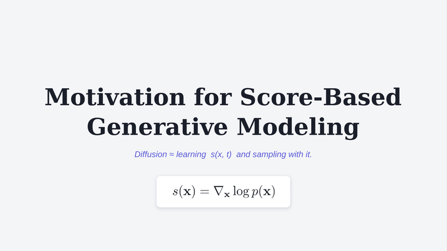

About
I am a Research Scientist at the Chan Zuckerberg Biohub Chicago, where I develop generative models across diverse biological data modalities, including small molecules, single-cell expression data, and cryo-ET protein volumes.
My research focuses on designing models that can generalize effectively to out-of-distribution settings, where training data are inherently limited. I am particularly interested in how meta-learning frameworks— especially hypernetworks—can be leveraged to make models more data-efficient and capable of adapting across diverse biological domains.
Before joining the Chan Zuckerberg Biohub, I was a Postdoctoral Researcher at the University of Chicago advised by Aly A. Khan. Previously, I was a PhD student at the Toyota Technological Institute at Chicago (TTIC), affiliated with the University of Chicago. I was fortunate to be advised by Michael Maire and Greg Shakhnarovich, and am also grateful for Rana Hanocka’s advice on all things 3D.
Thesis
-
Acquiring and Adapting Priors for Novel Tasks via Neural Meta-Architectures
PDF
Ph.D. Thesis, Toyota Technological Institute at Chicago (TTIC), 2025
Notes on Diffusion

Diffusion Models & Score-Based Generative Modeling Open notes →Publications
-
Atelier: Learning Local Self-Supervised Features for CryoEM Volumes via Hypernetworks
Phillip Lo*, Sudarshan Babu*, Dari Kimanius†, Aly A. Khan†
Under submission (* co-first authorship, † co-senior authorship) -
Virtual Cells Need Context, Not Just Scale
PDF
Website
Code
Payam Dibaeinia, Sudarshan Babu, Mei Knudson, Ali ElSheikh, Yibo Wen, Han Liu, Jason Perera, Aly A. Khan
ICML 2026 -
A Scalable Latent Diffusion Model for Single-Cell Gene Expression Data
PDF
Blog
Website
Code
Giovanni Palla, Sudarshan Babu, Payam Dibaeinia, Donghui Li, Aly A. Khan, Theofanis Karaletsos, Jakub M. Tomczak
ICML 2026 -
HyperDiffusionFields (HyDiF): Diffusion-Guided Hypernetworks for Learning Implicit Molecular Neural Fields
PDF
Sudarshan Babu*, Phillip Lo*, Xiao Zhang, Aadi Srivastava, Ali Davariashtiyani, Jason Perera, Michael Maire, Aly A. Khan
NeurIPS Workshop on AI Virtual Cells and Instruments: A New Era in Drug Discovery and Development 2025 -
HyperFields: Towards Zero-Shot Generation of NeRFs from Text
PDF
Website
Code
Sudarshan Babu*, Richard Liu*, Avery Zhou*, Michael Maire, Greg Shakhnarovich, Rana Hanocka
ICML 2024 -
iSeg: Interactive 3D Segmentation via Interactive Attention
PDF
Website
Itai Lang*, Fei Xu*, Dale Decatur, Sudarshan Babu, Rana Hanocka
SIGGRAPH Asia 2024 -
Online Meta-Learning via Learning with Layer-Distributed Memory
PDF
Sudarshan Babu, Pedro Savarese, Michael Maire
NeurIPS 2021 -
Domain-Independent Dominance of Adaptive Methods
PDF
Pedro Savarese, David McAllester, Sudarshan Babu, Michael Maire
CVPR 2021 -
HyperNetwork Designs for Improved Classification and Robust Meta-Learning
PDF
Sudarshan Babu, Pedro Savarese, Michael Maire
Preprint 2020
Talks
- Novel Molecular Representations for AI-Driven Discovery
2025 GLC ASPET 38th Annual Meeting - HyperDiffusionFields (HyDiF): Diffusion-Guided Hypernetworks for Learning Implicit Molecular Neural Fields
CME Department Seminar, University of Illinois at Chicago, 2025
Academic Service
- Reviewer: ICCV, CVPR, ECCV, NeurIPS, ICLR, SIGGRAPH, RECOMB
- Co-organized workshops: Midwest Computational Biology Workshop (TTIC, 2024) and TTIC Student Workshop (2020)
- TTIC/UChicago Vision Reading Group (2019–2024)
- TA: Statistical Machine Learning (Fall 2020)